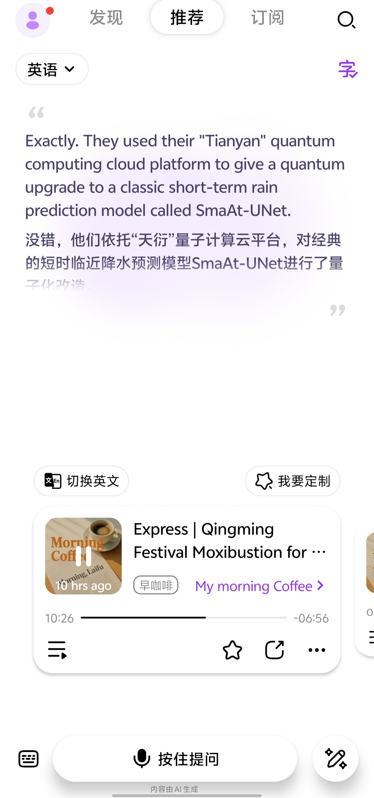
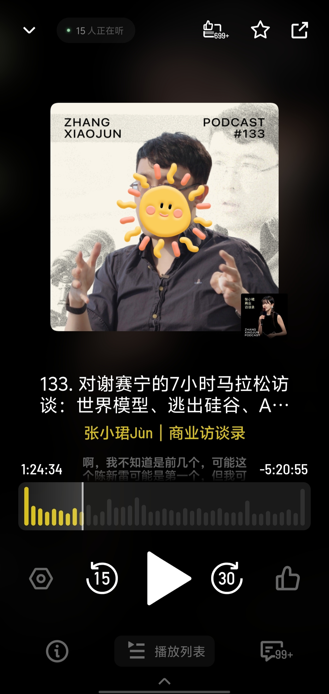

- 来福Laifu
- 一句话介绍：一款把播客/电台内容和 AI 语音交互结合起来的“私人 AI 电台”，用户可以边听边问、边听边点播。
- 最大的亮点：
- 能够支持断点交互，用户可以直接对正在播出的内容实时提问，博客会进行回答，然后继续进行播客。传统播客的问题是用户需要主动找内容、切节目、快进回听，而且遇到没听懂的点也没法立刻提问；来福试图把这些动作变成一句话完成，让用户不用搜索、打开即播，并通过个性化推荐和语音交互降低收听门槛。


- 最大的问题是什么
- 目前平台里的内容基本都是AI生成，但在科技、资讯等高信息密度内容上，如果没有清晰标明信息来源、生成依据和时效，用户很容易怀疑：我听到的这些内容到底是不是真的、准不准确、是不是最新的。所以我觉得需要在一方面建立用户的信任度。
- 我会如何改进